Satu rumah untuk kelas bahasa Arab.
Materi, kelas, dan kabar ananda kini tersusun di satu aplikasi.
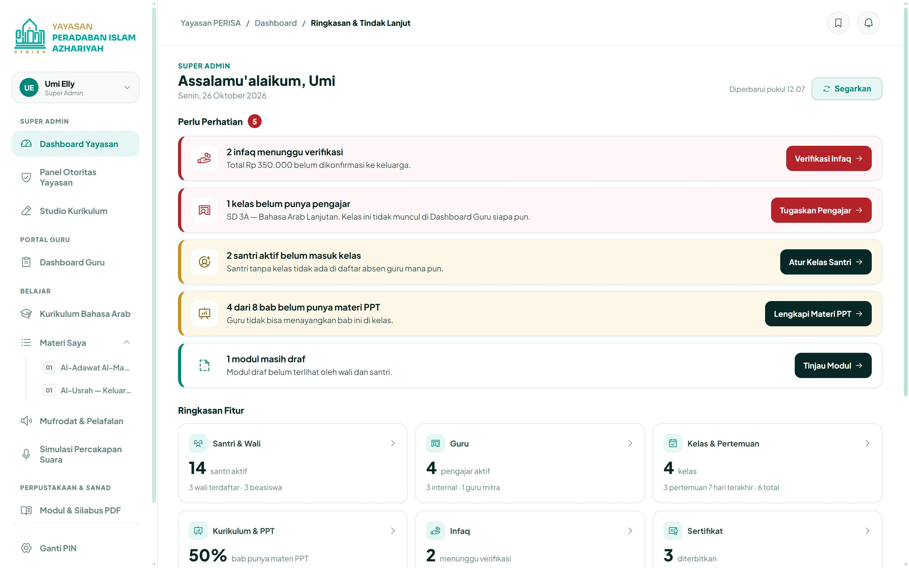
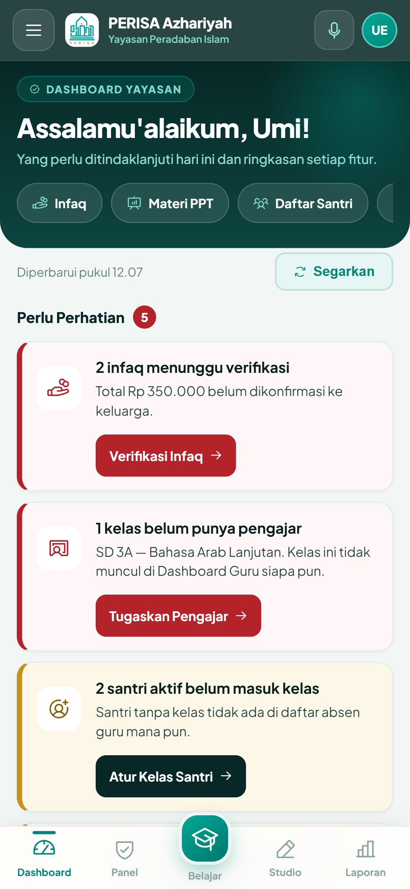
Tiga peran, masing-masing punya layar sendiri.
Masuk cukup dengan nomor WhatsApp dan PIN. Sesudahnya, setiap orang langsung tiba di layar yang memang ia butuhkan, di laptop maupun di HP.
-
Super Admin
Umi Elly dan Prima. Yang tampil pertama adalah urusan yang menunggu tindakan: infaq, kelas tanpa guru, materi yang belum lengkap.
-
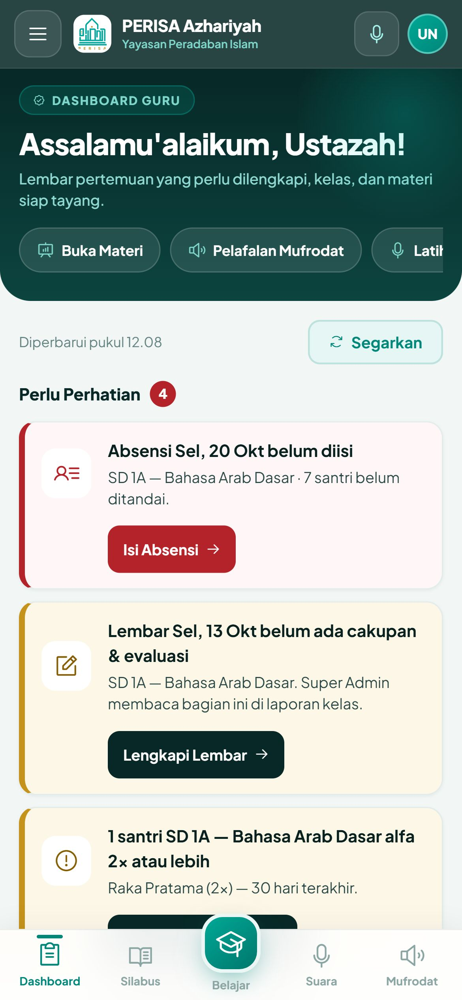
Guru
Absensi yang belum diisi, kelas yang ia ampu, dan materi yang siap ditayangkan hari itu.
-
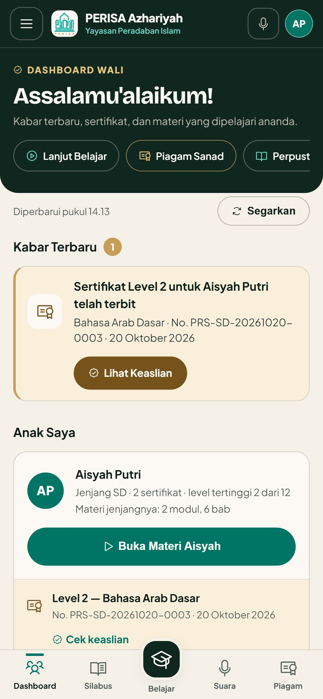
Wali
Kabar terbaru, sertifikat ananda, dan materi yang sedang dipelajari di kelasnya.
Panel Super Admin: tujuh urusan, satu tempat.
Setiap butir di Dashboard Yayasan punya tombol yang langsung membuka tab yang tepat. Tidak perlu mencari menu.
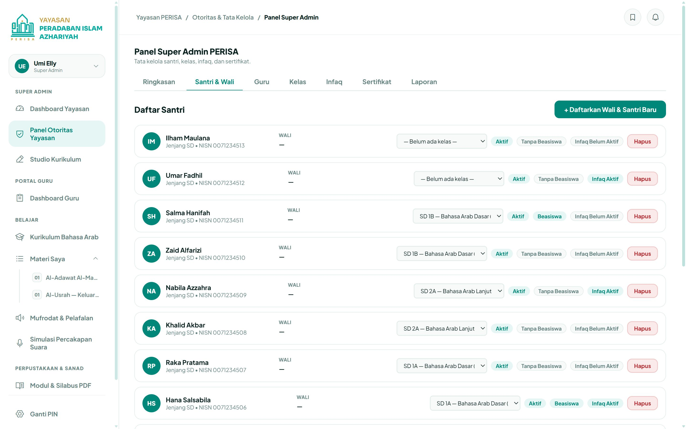
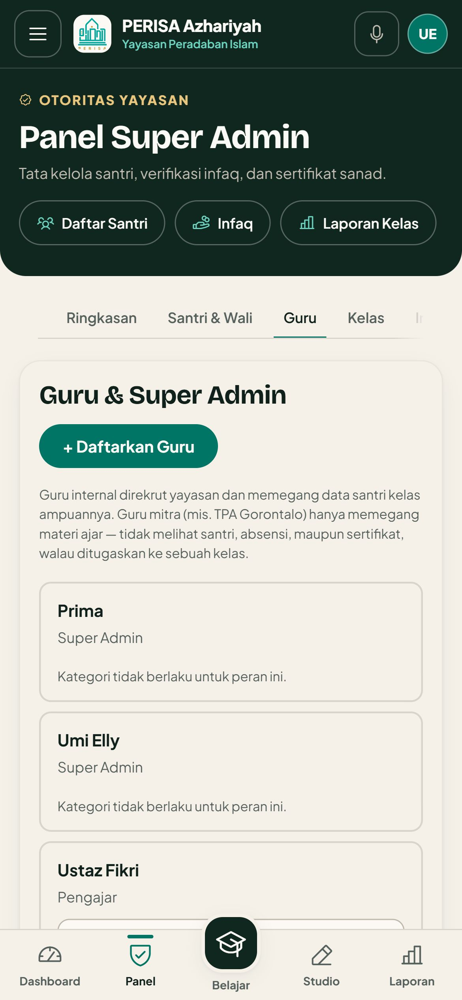
Umi menyusun materi, guru tinggal menayangkan.
Studio Kurikulum menyusun modul, bab, dan mufrodat tanpa menyentuh kode. PPT ditempel sebagai link OneDrive, jadi animasinya tetap utuh saat ditayangkan di kelas.
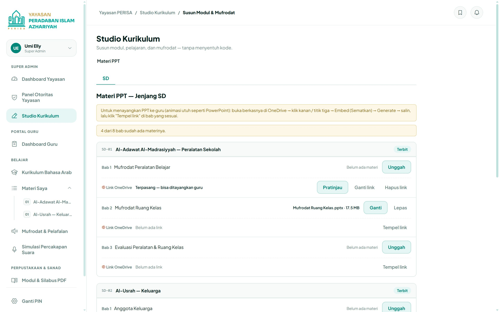
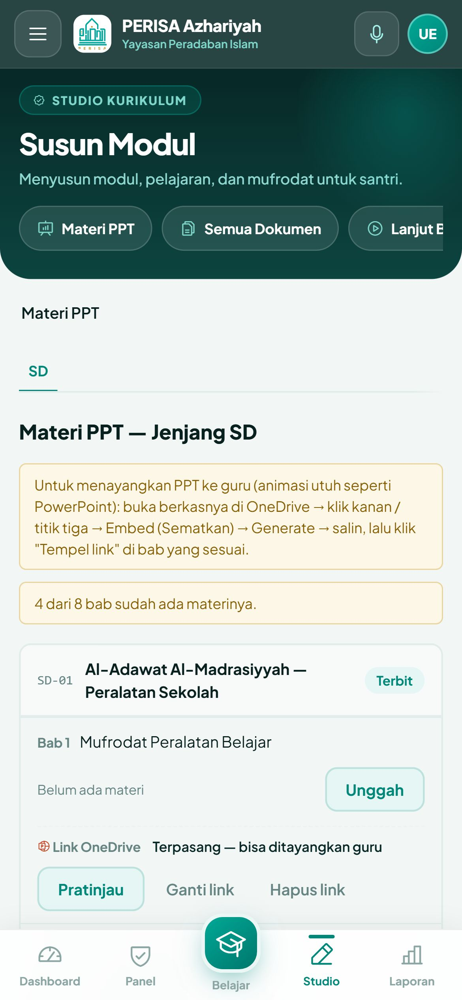
Modul per jenjang
Setiap modul punya status draf atau terbit. Yang masih draf belum terlihat oleh wali.
Mufrodat sekaligus banyak
Kosakata bisa diisi satu per satu atau diimpor dari berkas CSV.
Guru mitra, materi saja
Guru TPA kerja sama melihat materi ajar, tidak melihat data santri.
Di depan kelas, semuanya sudah siap.
Guru membuka bab hari itu, memutar pelafalan mufrodat, lalu mengajak santri berlatih percakapan dengan suara mereka sendiri.
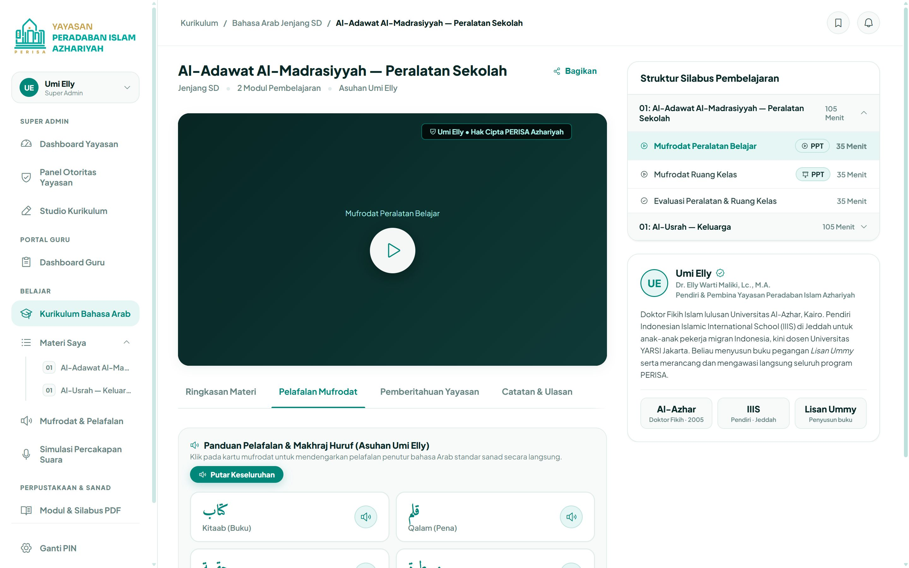
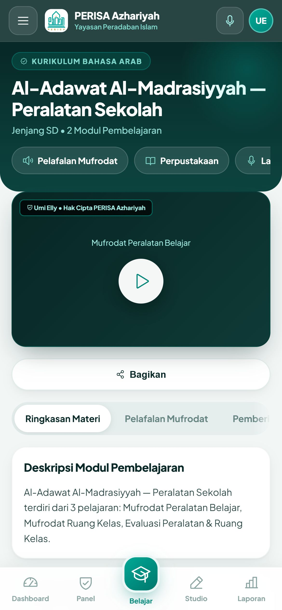
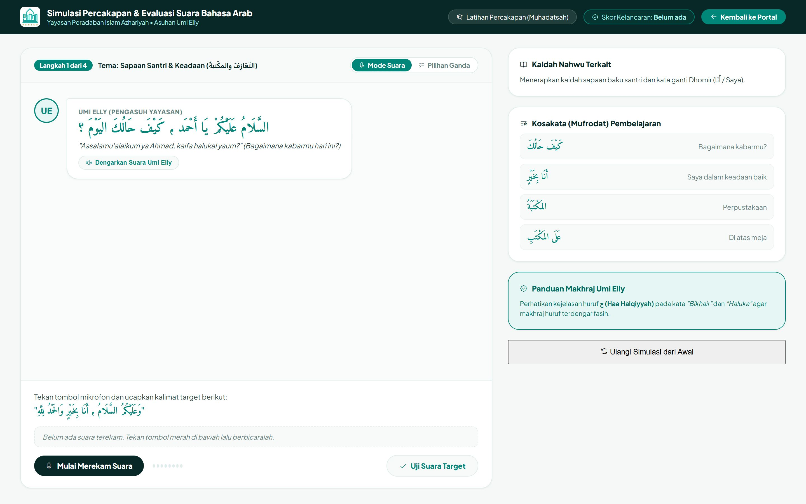
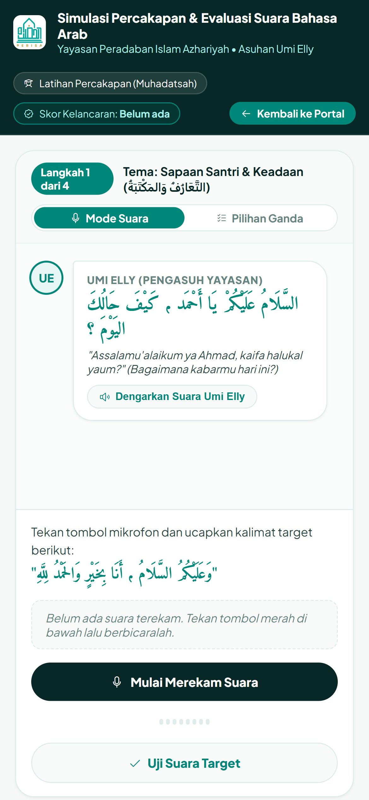
Lembar pertemuan menggantikan catatan manual.
Cakupan materi, evaluasi hari itu, dan absensi tersimpan per pertemuan. Semua santri sudah ditandai hadir, guru cukup mengubah yang tidak masuk.
Dashboard Guru mengingatkan absensi yang terlewat dan santri yang dua kali alfa dalam sebulan.
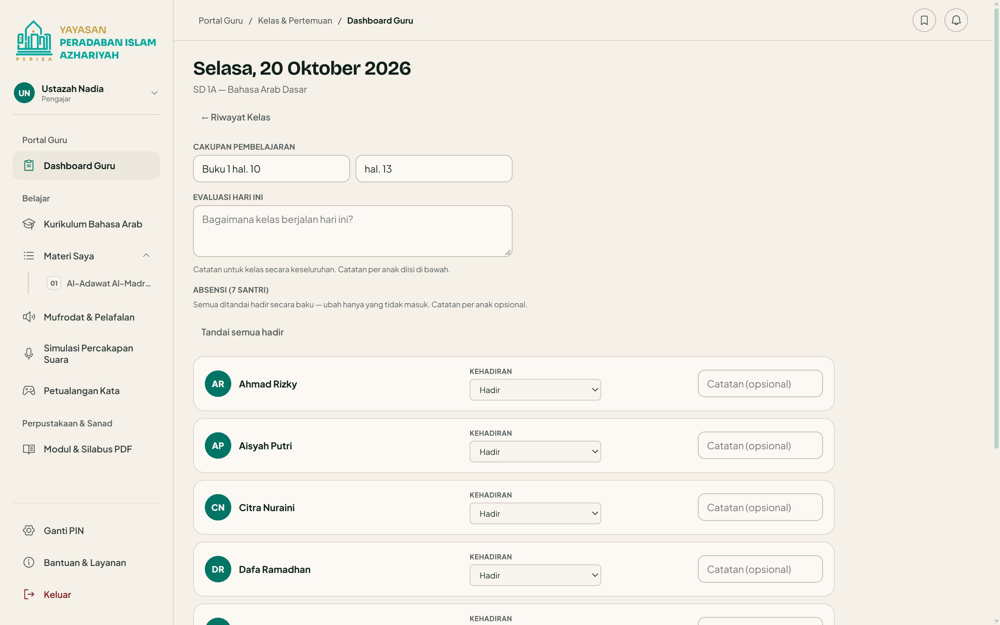
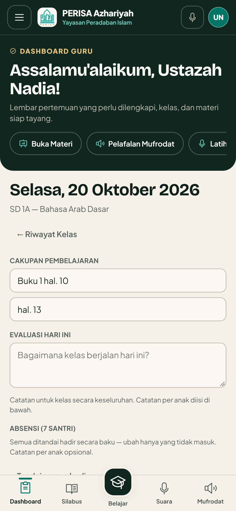
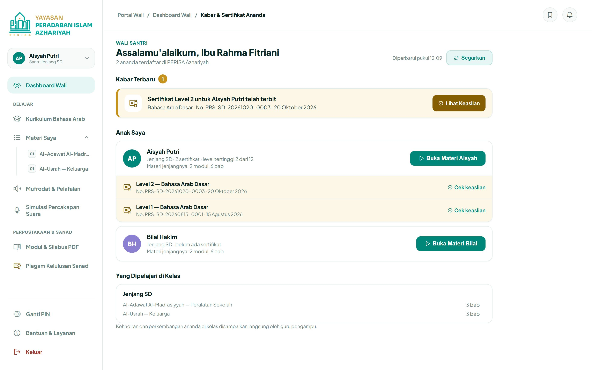
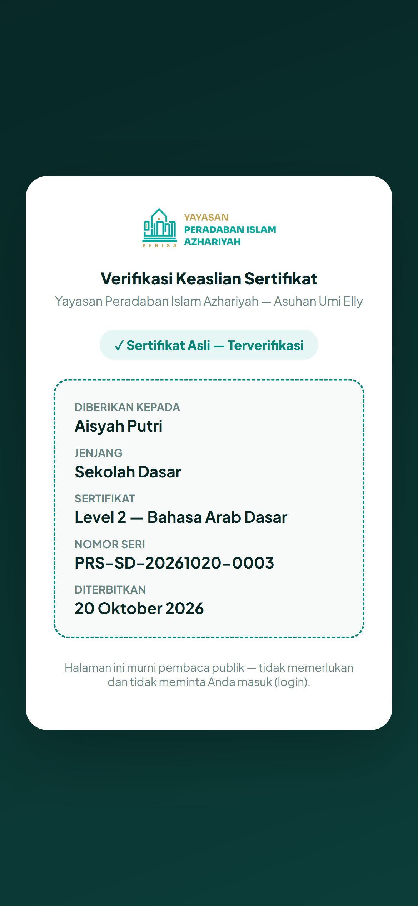
Wali dapat kabar, sertifikat bisa dicek siapa pun.
Begitu sertifikat terbit, kabarnya muncul di Dashboard Wali. Kode QR di lembar cetak membuka halaman verifikasi publik, tanpa perlu login.
Yang bekerja di balik layar.
Hal-hal yang tidak terlihat, tapi menentukan apakah data keluarga aman.
| Masuk | Nomor WhatsApp dan PIN 6 sampai 12 angka. Terkunci 15 menit setelah 5 kali salah. |
|---|---|
| Hak akses | Diperiksa basis data di setiap permintaan: guru hanya melihat kelasnya, wali hanya anaknya. |
| Di HP | Bisa dipasang seperti aplikasi, dan halaman dasarnya tetap terbuka saat sinyal putus. |
| Jejak | Perubahan penting, seperti peran dan kategori guru, tercatat di log audit. |
| Halaman | Skrip dari luar diblokir oleh kebijakan keamanan konten. |
Yang menunggu keputusan bersama.
Aplikasinya siap dipakai. Beberapa hal tinggal menunggu jawaban Umi dan tim.
- Seberapa jauh teks Arab tanpa harokat: polos sepenuhnya, atau hanya tanpa tanwin.
- Apakah wali boleh melihat ringkasan kehadiran ananda.
- Ujian akhir semester dicatat di aplikasi, atau tetap di buku.
- Siapa yang merekam suara pelafalan mufrodat.
- PPT asli Buku 1 dan foto halaman buku untuk game kelas.